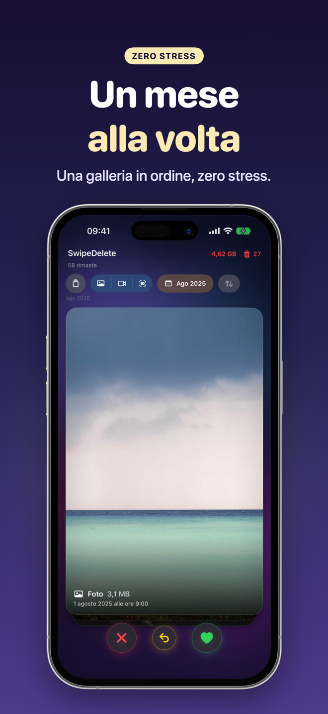
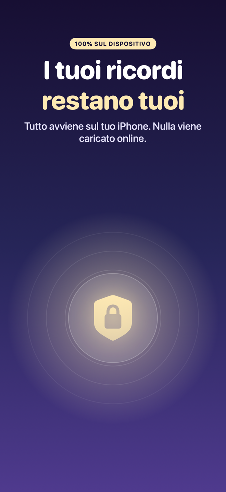
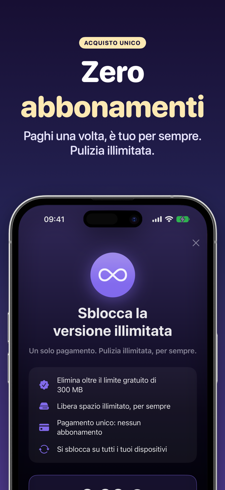

SwipeDelete · Pulizia Foto
Elimina foto inutili e libera spazio su iPhone con uno swipe
Scorri foto e video come carte: a sinistra elimini, a destra tieni. In pochi minuti la tua libreria torna leggera, piena solo dei ricordi che vale la pena tenere.
Prossimamente suApp Store100% sul dispositivo · Cestino di sicurezza · Acquisto una tantum, senza abbonamento

Riprenditi i tuoi GB, senza stress
Niente più album da sfogliare uno per uno. SwipeDelete ti mostra prima ciò che quasi certamente vuoi eliminare e ti lascia sempre l'ultima parola.
Prossimamente suApp Store- Liberi GB in frettaOrdina per dimensione e parti dai file più pesanti.
- Parti dai candidati più ovviScreenshot, scatti quasi identici, raffiche e foto di bassa qualità arrivano per primi.
- Elimini senza pauraCestino interno, annulla sempre disponibile e conferma di iOS prima della cancellazione.
- Privacy al primo postoTutto avviene sul tuo iPhone: nessuna foto viene caricata online.
Una pulizia che sembra un gioco
Decidi in un secondo, con un feedback tattile che rende tutto più piacevole. Scorri per vedere tutte le schermate →
A sinistra elimini, a destra tieni 
Prima i video più pesanti 
Cestino di sicurezza: ripristini quando vuoi 
Un mese alla volta, zero stress 
100% sul dispositivo 
Minuti di swipe, giga liberi 
Acquisto unico, zero abbonamenti
Come funziona
Quattro passaggi, nessuna curva di apprendimento.
Consenti l'accesso a Foto
Apri SwipeDelete e autorizza l'accesso alla libreria. L'analisi resta sul tuo iPhone.
Scegli da dove partire
Usa le Smart Suggestions, filtra per foto, video o screenshot, per anno e mese, oppure ordina per dimensione.
Scorri e decidi
A sinistra elimini, a destra tieni. Hai sbagliato? Annulli l'ultima scelta con un tap.
Rivedi e conferma
Controlla il cestino in griglia, ripristina ciò che vuoi tenere e conferma: iOS chiede l'ultima conferma.
Guide per liberare spazio su iPhone
Soluzioni pratiche ai problemi più comuni della libreria foto, con e senza app.
Come liberare spazio su iPhone
Da dove partire quando la memoria è piena.
Leggi la guida →Eliminare le foto duplicate
Trova doppioni e scatti quasi identici.
Leggi la guida →Eliminare gli screenshot
Svuota le catture accumulate in pochi minuti.
Leggi la guida →Eliminare le foto sfocate
Via gli scatti mossi e venuti male.
Leggi la guida →Trovare i video più pesanti
Il modo più rapido per recuperare GB.
Leggi la guida →Pulire il rullino foto
Una routine semplice per tenerlo in ordine.
Leggi la guida →Eliminare tante foto insieme
Velocità senza rischiare i ricordi importanti.
Leggi la guida →Eliminare le foto a raffica
Tieni lo scatto migliore, elimina il resto.
Leggi la guida →Domande frequenti
Come si eliminano tante foto velocemente su iPhone?
Con SwipeDelete scorri foto e video come carte: a sinistra per eliminarli, a destra per tenerli. Ogni decisione richiede un secondo e puoi annullare l'ultima scelta in qualsiasi momento. Scopri di più
Se elimino una foto per sbaglio posso recuperarla?
Sì. Ciò che scorri a sinistra finisce prima nel cestino interno dell'app, dove puoi ripristinarlo singolarmente o tutto insieme. La cancellazione avviene solo quando la confermi tu, e iOS chiede un'ulteriore conferma. Scopri di più
SwipeDelete trova le foto duplicate e gli screenshot?
Le Smart Suggestions analizzano la libreria sul dispositivo e portano in cima al mazzo screenshot, scatti quasi identici, raffiche non selezionate e foto di bassa qualità. Scopri di più
Come libero più spazio possibile su iPhone in poco tempo?
Ordina il mazzo per dimensione: i video e i file più pesanti arrivano per primi, così recuperi più GB con meno swipe. Scopri di più
Le mie foto vengono caricate su un cloud?
No. Tutta l'analisi avviene sul tuo iPhone con il framework Apple Vision. Nessun account, nessun caricamento online. Scopri di più nell'informativa privacy
SwipeDelete è un abbonamento?
No. Puoi liberare gratis fino a 300 MB; per pulire senza limiti basta un acquisto una tantum, valido su tutti i tuoi dispositivi Apple. Scopri di più nei termini d'uso
Scorri, decidi, ritrova spazio
Spazio per le foto che contano davvero. SwipeDelete arriva presto su App Store.
Prossimamente suApp Store